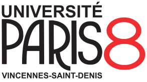

Lecturer in Design Thinking and Media Technology,
Breda University of Applied Sciences
August 2018 – now
Teaching subjects relating to Applied Research and Media Informatics, including Image Editing, Web Design and Development, Design Thinking, Interactivity.
Primarily teaching in the Bachelor in Creative Business (CB) and the Master in Media Technology (MMI), as well as giving guest lectures in the Master in Game Technology (MGT).
Coordinator of the Media Technology Module within the MMI.
Staff Trainer on Artificial Intelligence.
Project Supervisor for Final Year Capstone Projects and for the Interactive Department of Production House in the CB Bachelor.
Member of the CB Curriculum Development Team and of the Assessment Committee for the Academy for AI, Games and Media.
Developed online learning activities and content during the Covid–19 pandemic and for the fully online MMI Executive Track.
Followed a Teaching Qualification Programme (TQP), including the obtention of the Basic Examiner Qualification (BKE).
Digital Research Specialist,
University of Nottingham
2017 – 2018
Translating Information Technology (IT) requirements to bridge the gap between academic researchers and IT services.
Reporting and advising on data management practices.
Research and Development Intern (Part-time),
British Broadcasting Corporation
2017 – 2018
Visited the R&D Department as part of the BBC User Experience Research Partnership bringing together BBC R&D and six research universities.
Organized workshops aimed at developing more integrated experiences across BBC platforms.
Information Visualization Specialist,
Institut de Recherche et d’Innovation
2011 – 2013
Designing and developing interactive data visualization systems.
Broadcast Systems Engineer,
Télévision Française 1 S.A.
2005 – 2009
Part of the “Systems Department”, providing 24/7 levels 1-3 support for the company‘s broadcast systems.
Education
PhD in Human-Computer Interaction,
University of Nottingham
2013 – 2017
Conducted research into the development of complex media experiences with a “Research-through-Design” paradigm.
Thesis title: Putting trajectories to work: translating a Human-Computer Interaction framework into design practice.

MA in Digital Creation and Publishing,
Université Paris 8
2009 – 2011
A multidisciplinary programme combining UX design, web development, project management and social sciences.
Original name: Master Création et Édition Numériques.
BEng in Digital Audiovisual Systems,
INAsup
2004 – 2005
Degree awarded by Université Gustave Eiffel in partnership with the Institut National de l‘Audiovisuel
Original name: Licence Professionnelle Réseaux et Télécommunications option Systèmes Audiovisuels Numériques.